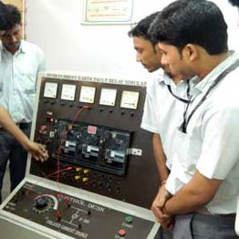
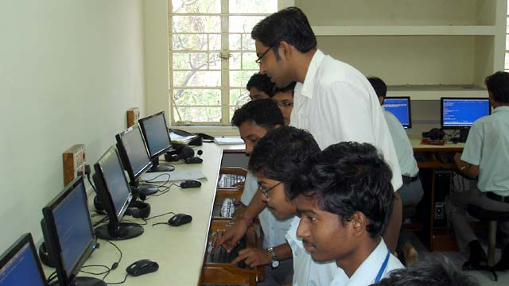
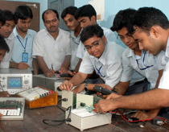
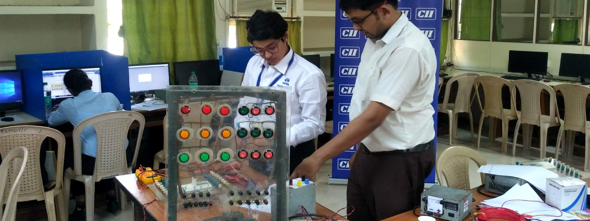
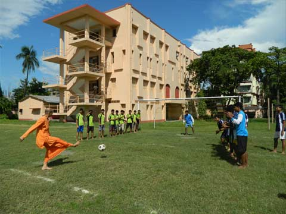

DEPARTMENTS





We offer 3 Years Diploma in Civil Engineering (60 Seats). Considered the mother of all Engineering. Mechanical
Engineering (60 Seats). The key to prosperity of all industrialized nations. Electrical Engineering (40 Seats).
The driving force that runs industries as well as nations. Electronics & Telecommunication Engineering (60 Seats).
The heart of modern communication, control & computer technologies.
Civil Engineering
Civil engineering systems is a discipline that promotes the use of systems thinking to manage complexity and change in
civil engineering within its wider public context.It posits that the proper development of civil engineering
infrastructure requires a holistic, coherent understanding of the relationships between all of the important factors
that contribute to successful projects while at the same time emphasising the importance of attention to technical detail.
Mechanical Engineering
Mechanical engineering is an engineering branch that combines engineering physics and mathematics principles with
materials science to design, analyze, manufacture, and maintain mechanical systems.The mechanical engineering field
requires an understanding of core areas including mechanics, dynamics, thermodynamics,materials science, structural
analysis, and electricity.
Electrical Engineering
Electrical engineering is an engineering discipline concerned with the study, design and application of equipment,
devices and systems which use electricity, electronics, and electromagnetism.It emerged as an identifiable occupation
in the latter half of the 19th century after commercialization of the electric telegraph, the telephone, and electrical
power generation, distribution and use.
Electronics & Telecommunication Engineering
In the field of electronic engineering, engineers design and test circuits that use the electromagnetic properties of
electrical components such as resistors, capacitors, inductors, diodes and transistors to achieve a particular
functionality.
History
Electronic engineering as a profession sprang from technological improvements in the telegraph industry in the late
19th century and the radio and the telephone industries in the early 20th century. People were attracted to radio by
the technical fascination it inspired, first in receiving and then in transmitting.
Profession
Electronic engineering (also called electronics and communications engineering) is an electrical engineering discipline
which utilizes nonlinear and active electrical components (such as semiconductor devices, especially transistors and
diodes) to design electronic circuits, devices, integrated circuits and their systems.
Education
The students of the department are provided with rigorous training along with theoretical background in Analog &
Digital electronics, Optical fibre, consumer electronics, Microwave & antenna, Automation and Tele-communication.